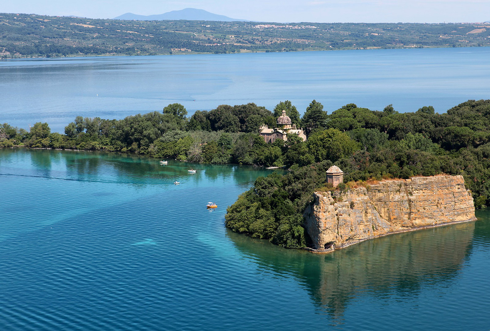
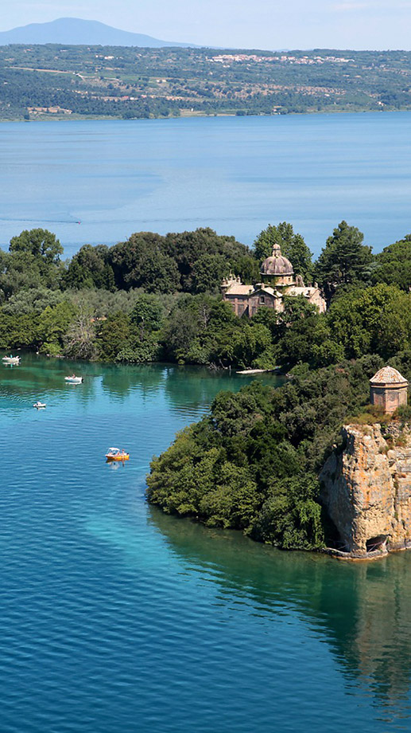

Itinerari ed escursioni
I dintorni di Montefiascone sono ricchi di storia, tradizione e cultura.
Podere La Cavallara
Itinerari ed escursioni
Podere La Cavallara
Esplora le bellezze della Tuscia
Borghi autentici, scorci sul lago, natura e cultura: lasciati guidare alla scoperta dei luoghi più affascinanti nei dintorni.


Podere la Cavallara
Controlla le disponibilità
Compila il modulo di richiesta o contattaci telefonicamente.